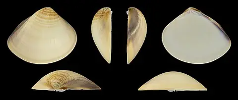

Main course · Popular in West coast and Deccan
Tisryo masala
Tisryo masala is made with wild clams & shellfish, a favourite in West coast and Deccan.

How do you make tisryo masala?
Clams on the half shell cooked dry with coconut and Goan spices.
Wild ingredients
- Clams & shellfish (Meretrix casta): in season October to March
Watch the recipe

Video: Sarita's Goan Recipes on YouTube